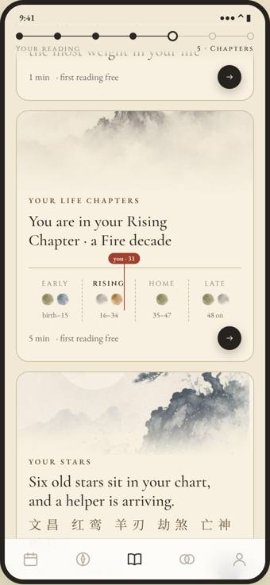
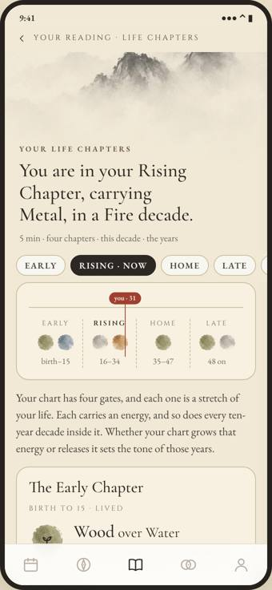
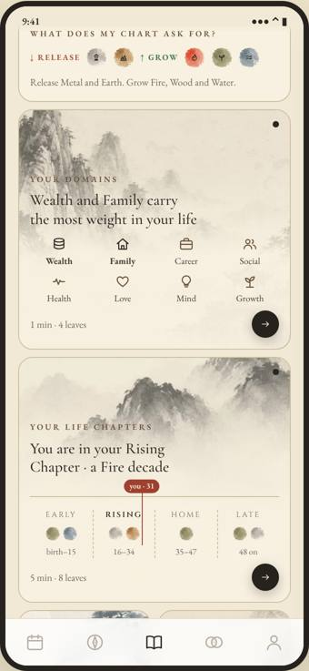
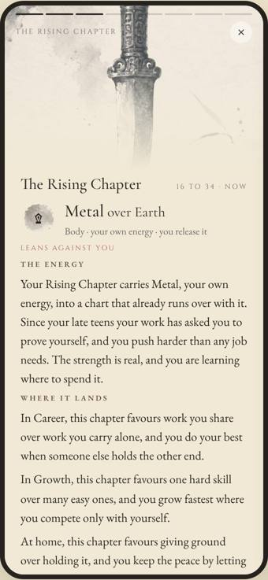
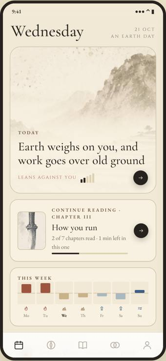
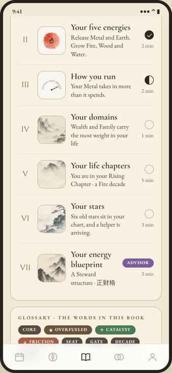
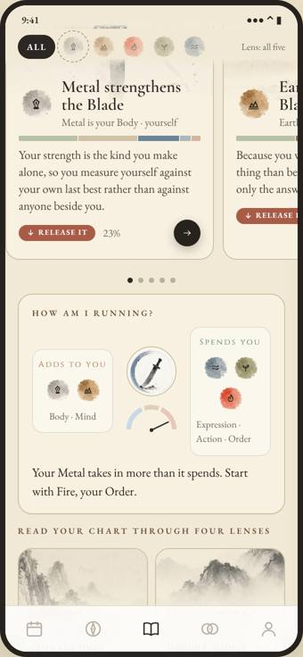
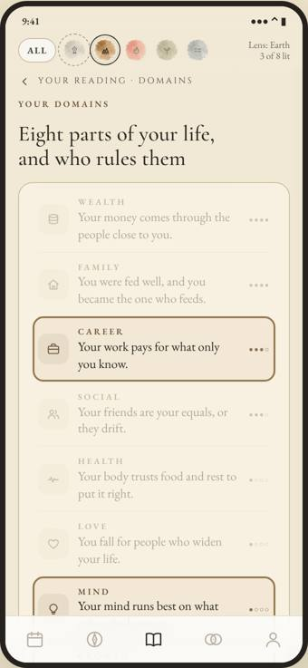

The four variants compared, then fifteen rows to rule. Rule them one at a time; my recommendation is always option A. Your answers build a code line at the bottom of the screen, for example "R1 A, R2 B".


One unrolling scroll with a progress rod; depth sections become painted tiles that push full pages.
Open V1 ›

A grid of teaser tiles under the wheel; every section reads as leaves, like the first reading.
Open V2 ›

The app opens on Today; Your reading is a book with a contents page and seven chapters.
Open V3 ›

The energies are the index; a five-sign rail lights each energy across every page.
Open V4 ›| V1 Handscroll | V2 Album | V3 Almanac Home | V4 Five Gates | |
|---|---|---|---|---|
| Your reading | One scroll, seven beats, a rod | Identity strip, wheel, tile grid | Cover, wheel, contents page | Hero, wheel, energy shelf, four lenses |
| Long sections | Pushed pages with sticky anchors | Leaves; "read as one page" option | Chapter pages with a reading bar | Pages, filterable by energy |
| Where am I | Seven-knot rod | Unread dots, a seal stamp when read | Read marks and minutes on contents | Rail shows the active energy |
| Next step | Next tile at every page end | Next tile on the last leaf | Next chapter; Continue on Today | Follow an energy everywhere |
| Visual share | Medium: art bands on tiles and pages | High: every tile and most leaves | Medium: thumbnails and chapter bands | High: an art card per energy |
| Daily return | Same as today | Today as a large painted card | Strongest: lands on Today, offers to continue | Layered year, month, day |
| Change to the app | Smallest; same IA | Medium; new leaf reader reused everywhere | Medium; landing tab and chapter shell | Largest; lens logic on every page |
| Main risk | Still long; least new | Leaves can feel slow for skimmers | "Book" may read as finite, done once | Rail adds a concept; Stars do not map |
Tap one option per row. Rows starting with R are the design; rows starting with N are new art and fixes.
No variant swaps in new art. These are proposals only, for you to rule in rows N1 to N3.
One painting per pair of your core element and one of the five energies, so every chart’s five sheets have a picture: 5 core elements × 5 energies = 25. Each shows the relation the sheet names in the locked words (feeds you, shapes you, you feed it, you shape it, more of you).
concept-arts/library plates, so the sheet slot and any tile can use it.Leaves and story cards (V2) want 3:4 crops. Each element already has two portrait plates (t_{element}_{1,2}_p); cropping three more per element from the existing landscape plates gives five per element without new painting.
DES_14 §5 gap 2: the yin-stem paintings (丁 candle, 辛 jewel, 癸 dew, 乙 grass, 己 field) already exist in the art vault but are not mirrored into public/. Mirroring them lets energy cards and sheets match a yin chart’s stem. No generation needed.
Small square ink marks, one per reading section, for a picture index. Only needed if V3’s contents page is adopted.
guidance/InkTile.jsx (the Guidance tile subtitles), tabs/CompatScreen.jsx (two) and reading/DayMasterCta.jsx.No rows ruled yet